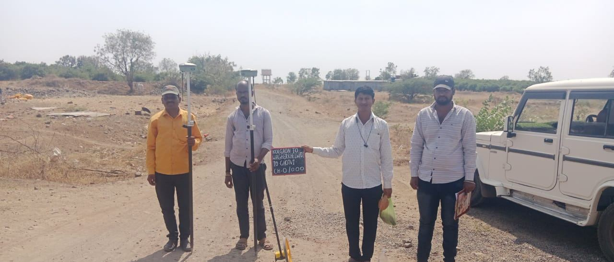
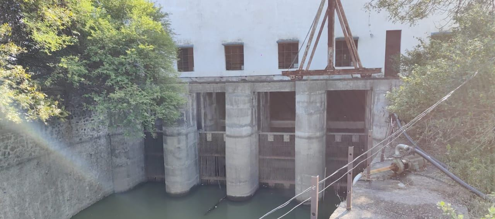
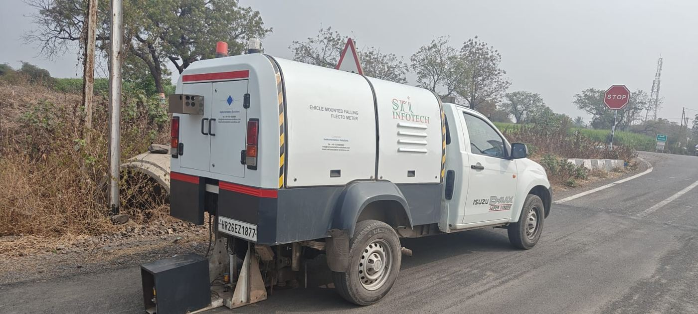
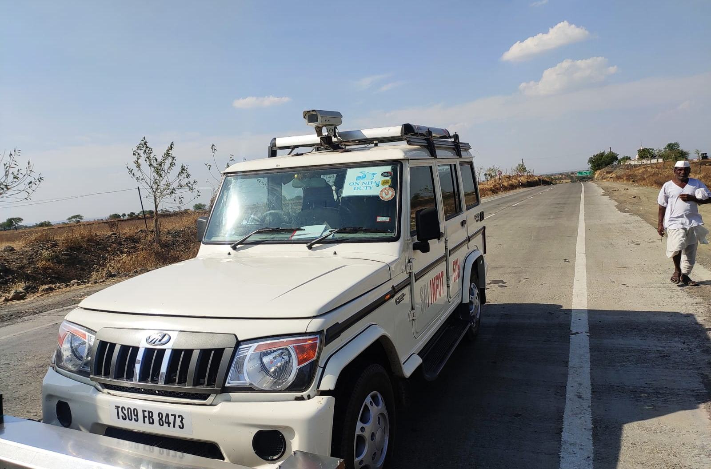
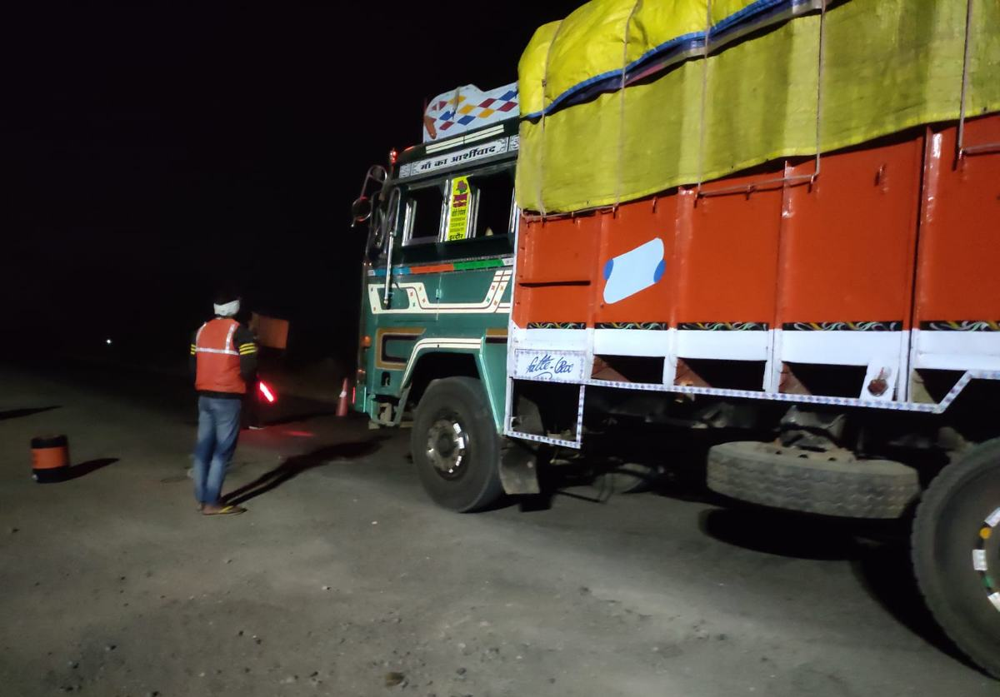
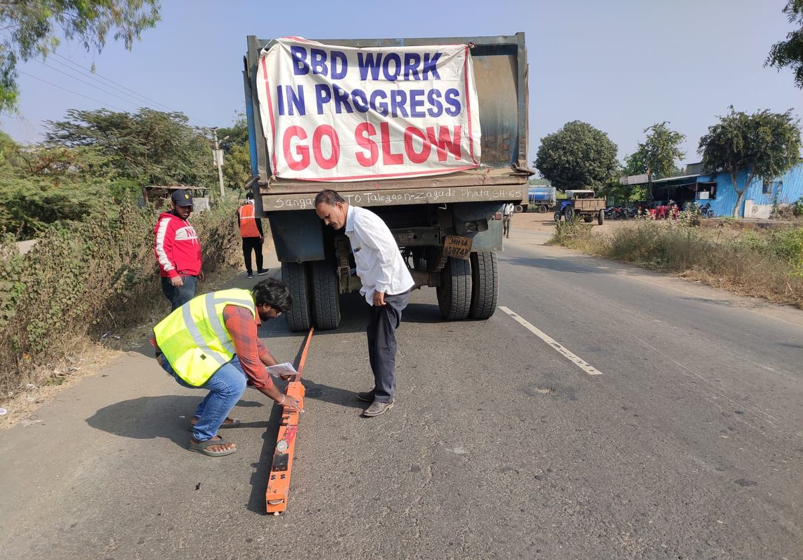
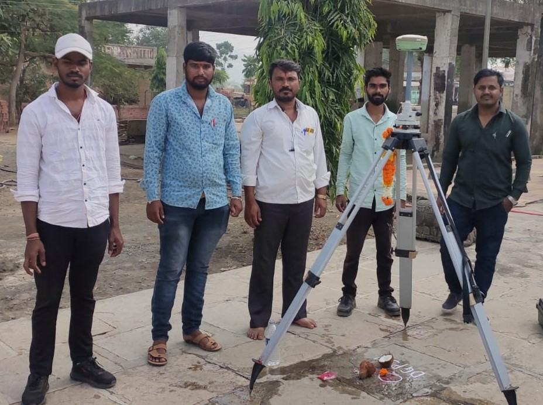
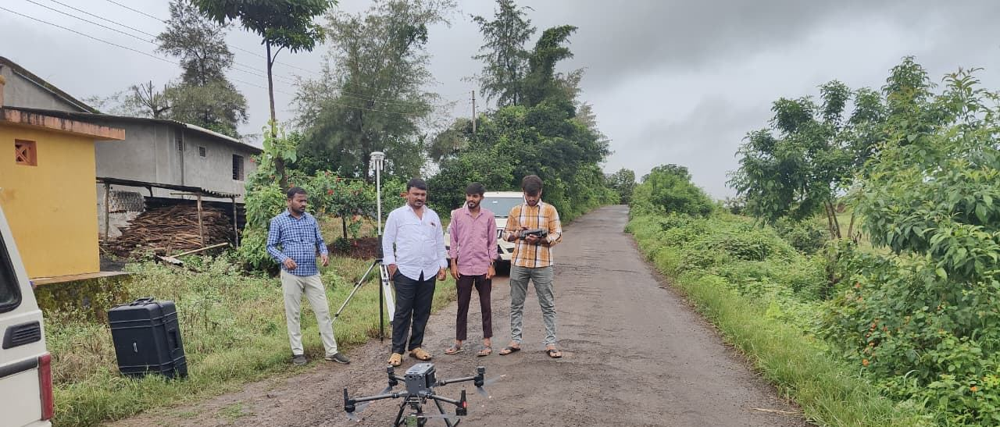

CompletedRoads & highways
MMGSY-II rural road DPRs, Ahilyanagar
51 roads, 244 km: road, culvert and bridge survey, traffic counts, CBR testing, pavement design, estimates and DPRs.


Home / Projects
A selection of our work since 2019, completed and ongoing, for P R Consulting Engineers LLP, P R Associates and their joint venture.
51 roads, 244 km: road, culvert and bridge survey, traffic counts, CBR testing, pavement design, estimates and DPRs.

41 roads, 200 km designed with thin white-topping over the existing road.
35 roads, 199 km designed with full-depth reclamation and cement-treated base layers.

140 km of rural roads surveyed, investigated and designed, with culverts and estimates.
Road DPRs for ten talukas, plus investigation, hydrological survey and DPRs for three bridges.

14 two-lane submersible and minor bridges, 410 m in all: survey, 18 boreholes (165 m) with lab tests for bearing capacity and scour, design and DPRs.
DGPS survey, traffic survey, soil investigation, design and DPR for a state highway link.
About 120 km of road condition surveys, before and after construction.
Topographic survey, trial bores and geological survey, and pipe distribution network design in WaterGEMS for rural tap water schemes.

16 km double levelling, 14 km detailed survey, 100 m of trial bores with core logging, 700 cum trial pits and a geological report for the Godavari intake and talav grid.
696 ha of command surveyed with georeferencing, chak planning, pipe distribution network design and estimate.
DGPS survey superimposed on village maps, contours, chak planning and full PDN design.

Survey along the rising main and capacity calculations for village ponds and a KT weir.
Topographic and structural survey of distributaries and water courses for canal section and structure repairs.
Survey, design and drawings for roads and bridges that the reservoir will submerge.
Survey of the existing left and right bank canals.
18-acre topographic survey on a 5 m grid with as-built layouts at Kharadi, plus soil and groundwater sampling with NABL testing; site surveys at Thane and Chinchpokli.
DGPS set-out of a new college building and compound wall; contour survey and set-out of a farm pond.
18 corridor roads, 55 km: topographic, soil and traffic surveys, EHS studies, pavement design, DPRs and tender papers.
Five packages, 41 roads and about 133 km, from field survey through administrative approval and technical sanction.

PMC for 171.73 km of PMGSY and MMGSY roads built with full-depth reclamation: proof checking, layer-wise QC tests, FWD surveys and supervision.
Two roads of 1.9 km widened to a 7 m two-lane carriageway: survey, design, estimates, contractor tenders and supervision.
117 km of main canal, distributaries and water courses, 190 structures and a 200 ha block contour.
7,058 ha DGPS command survey, chak planning and PDN design, 66 km double levelling, NX bores and component designs.

252 m of NX core drilling logged for recovery and RQD, 11.75 ha contour survey, levelling and geological reports.
Survey, GIS maps and the PARIVESH proposal through the State and National Boards for Wildlife.
Surveys, plans, estimates and DPRs for state-scheme works, town planning approvals, and supervision to completion.
Total station survey of development-plan roads and line marking on site.
Pre- and post-work surveys for sewer lines, road top levels, plot and encroachment surveys, building line-out.
Photos taken by our survey, testing and investigation teams.











Departments, municipal bodies, trusts and companies we have worked for.
")


Also five municipal councils (Sangamner, Rahuri, Mahabaleshwar, Akluj and Rajgurunagar), Zilla Parishads Pune, Palghar and Gondia, Chetak Engineers, Balason Infrastructure and D R Construction.

Send us the scope or the tender notice and we will reply with a methodology and fee.